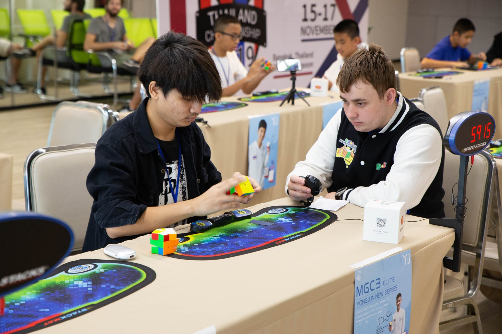
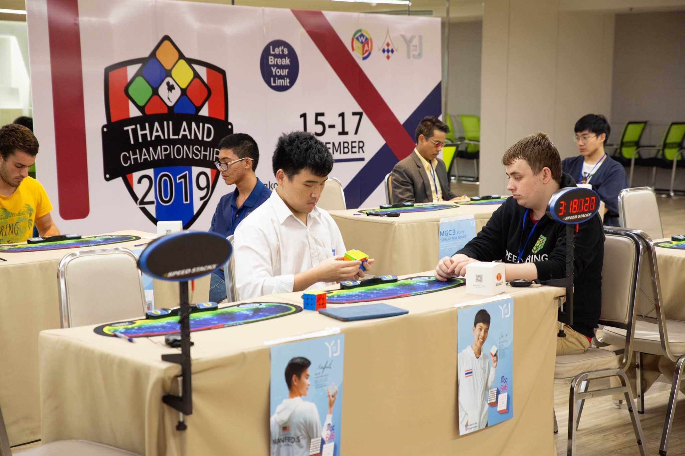

เกี่ยวกับเรา
Speedcubing คืออะไร?
Speedcubing คือการแข่งขันเพื่อแก้โจทย์ twisty puzzle โดยผู้ที่แก้โจทย์ได้เร็วที่สุดจะเป็นผู้ชนะ ตัวอย่าง puzzle ที่รู้จักกันทั่วไปคือ 3x3x3 (หรือที่เรียกกันว่า รูบิค)
โดยการเล่น Speedcubing นั้นไม่จำเป็นต้องเล่นเพื่อเข้าแข่งขันเพียงอย่างเดียว เพราะการเล่น Speedcubing นั้นจะช่วยฝึกฝนทักษะหลาย ๆ อย่างให้กับผู้เล่น เช่น การสังเกต, ความจำระยะสั้นและระยะยาว, สมาธิ, ความอดทน, กล้ามเนื้อมัดเล็กและกล้ามเนื้อมัดใหญ่, การทำงานสอดประสานกันระหว่าตา มือ และสมอง
นอกจากนนี้การเล่น Speedcubing ยังไม่ได้จำกัดอยู่แค่กับวัยเด็กเท่านั้น ผู้คนทุกวัยก็สามารถเล่นได้ โดยในวัยผู้ใหญ่นั้น การเล่น Speedcubing มีผลในช่วยในการป้องกันโรคเกี่ยวกับความจำอย่างเช่นโรคอัลไซเมอร์ได้อีกด้วย
|  |  |
ThailandCube
ThailandCube หรือชมรมลูกบาศก์ไทย ก่อตั้งขึ้นเมื่อเดือนกรกฎาคม พ.ศ.2550 โดยคุณชัชวาลย์ จารุวัฒนกุล
ชมรมของเราได้มีการจัดกิจกรรมต่าง ๆ ที่เกี่ยวกับ Speed Cubing มาตั้งแต่เริ่มก่อตั้ง เช่นการ meeting รวมตัวพูดคุย หรือการแข่งขันอย่างไม่เป็นทางการในประเทศไทย
จนกระทั่งในปี พ.ศ. 2552 ชมรมของเราก็ได้จัดการแข่งขัน Speed Cubing อย่างเป็นทางการที่ได้รับการรับรองจากสมาคมลูกบาศก์โลก โดยมีคุณชัชวาลย์เป็นผู้แทนจากสมาคมลูกบาศก์โลกคนแรกของประเทศไทย
ThailandCube Discord
ในปี พ.ศ. 2562 ThailandCube ได้มีการสร้างเซิฟเวอร์สำหรับการพูดคุยสนทนาทางแอพพลิเคชัน Discord